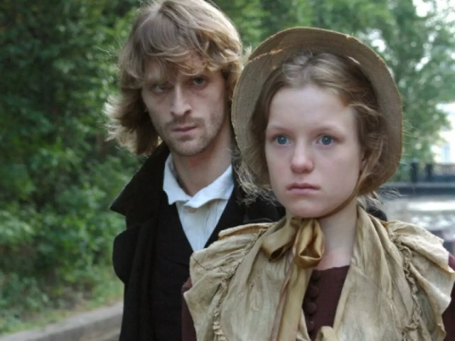
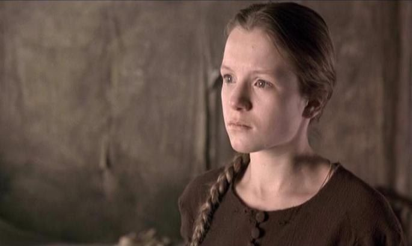
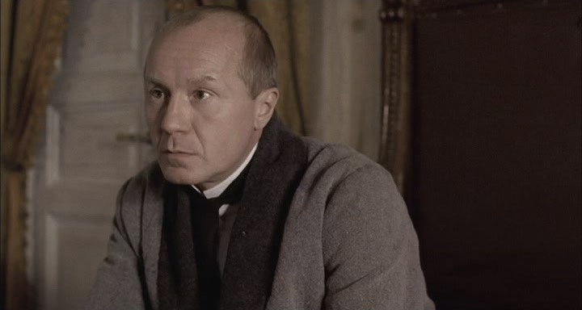
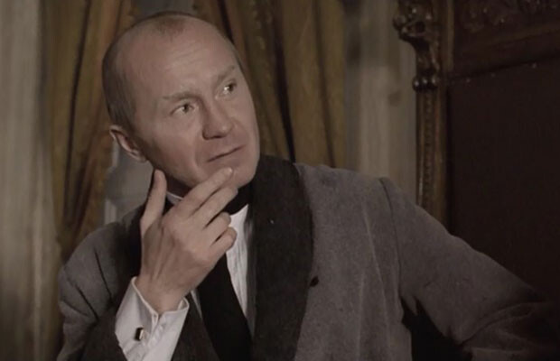

Разбор "Преступления и наказания"
Сюжет
Роман Ф. М. Достоевского рассказывает историю бедного студента Родион Раскольникова, который совершает убийство старухи-процентщицы, считая, что имеет право распоряжаться чужой жизнью ради высшей цели. Однако после преступления он испытывает мучительное раскаяние и внутренний конфликт, которые приводят его к моральному и духовному перерождению.
- Идея "сильной личности" – теория Раскольникова о "тварях дрожащих" и "право имеющих". Автор показывает несостоятельность этой идеи, так как преступление разрушает героя изнутри.
- Проблема преступления и наказания – не только юридическое, но и моральное наказание играет решающую роль в судьбе героя.
- Бог и вера – через образ Сони Мармеладовой Достоевский показывает путь духовного спасения.
- Социальное неравенство – писатель изображает тяжелое положение бедняков, моральное разложение общества.
Анализ персонажей
Родион Раскольников
Основные черты: ум, гордость, амбиции, внутренний конфликт, одиночество. Раскольников — студент, находящийся в глубоком кризисе. Его теория о «тварях дрожащих» и «право имеющих» оказывается несостоятельной, ведь после убийства он испытывает муки совести. Он мечется между гордостью и потребностью в раскаянии, и только любовь Сони Мармеладовой помогает ему признать свою вину и обрести путь к духовному возрождению.
Родион Романович Раскольников -главный герой романа Ф.М. Достоевского «Преступление и наказание», студент, который совершает убийство старухи-процентщицы, руководствуясь своей теорией о «праве сильного». Он разделяет людей на «обычных» и «необыкновенных», считая, что великие личности могут преступать законы ради высшей цели. Однако после убийства он испытывает мучительное раскаяние, его психика разрушается, а теория терпит крах. Внутренний конфликт Раскольникова выражается в борьбе между его гордыней и совестью, между желанием оправдать своё преступление и чувством вины. Он стремится доказать себе и окружающим свою силу, но в итоге оказывается жертвой собственного сознания. Важнейшим моментом становится его встреча с Соней Мармеладовой, которая становится для него нравственным ориентиром. Именно она убеждает его покаяться и признаться в преступлении, а её вера и самопожертвование помогают ему встать на путь искупления. В финале романа Раскольников отправляется на каторгу, где сначала остаётся замкнутым и равнодушным, но постепенно, под влиянием Сони, начинает преображаться. Его символическое «воскрешение» перекликается с евангельской притчей о Лазаре, указывая на возможность духовного возрождения. Раскольников – сложный и многогранный персонаж, воплощающий борьбу разума и морали, гордыни и раскаяния, преступления и наказания.
Соня Мармеладова
 Основные черты:Самопожертвование, смирение, доброта, сострадание, религиозность, терпение, всепрощение, искренность, преданность, моральная чистота, сила духа, бескорыстие, любовь, сочувствие, мудрость.
Соня Семёновна Мармеладова– один из самых светлых и трагичных персонажей в романе Ф.М. Достоевского «Преступление и наказание». Она – бедная девушка, вынужденная заниматься проституцией, чтобы прокормить свою семью. Однако, несмотря на тяжёлую судьбу, Соня остаётся нравственно чистой, доброй и самоотверженной. Её образ противопоставляется Раскольникову: если он идёт на преступление, оправдывая его теорией «сильной личности», то Соня жертвует собой ради других. Она не осуждает Раскольникова, а сочувствует ему, становясь его нравственным проводником. Соня играет ключевую роль в сюжете: именно ей Родион первым признаётся в убийстве, и именно она убеждает его покаяться, что становится переломным моментом в его духовном возрождении. Соня олицетворяет христианские ценности милосердия и прощения, а её чтение притчи о воскрешении Лазаря намекает на возможность духовного возрождения Раскольникова. В финале романа она добровольно следует за ним на каторгу, оставаясь рядом в его процессе искупления. Соня Мармеладова – символ всепрощающей любви и истинного самопожертвования, который становится для Раскольникова и читателя воплощением высшей нравственности.
Порфирий Петрович
 Основные черты:Проницательность, хитрость, психологизм, интеллектуальность, наблюдательность, терпеливость, ироничность, саркастичность, настойчивость, интуиция, манипулятивность, профессионализм, умение вести беседу, стратегическое мышление, внимательность.
Порфирий Петрович – следователь, ведущий дело об убийстве старухи-процентщицы, один из самых интеллектуальных персонажей романа. Он обладает проницательностью, хитростью и тонким психологизмом, что позволяет ему распознать истинного преступника без прямых улик. В отличие от традиционных сыщиков, он действует не грубой силой, а методом психологического давления, подталкивая Раскольникова к саморазоблачению. Его стиль общения построен на иронии и сарказме, он терпеливо ведёт игру, создавая у собеседника ощущение ловушки, из которой невозможно выбраться. Порфирий не торопится с арестом, понимая, что сильнейшее наказание для Раскольникова – это его собственные душевные муки. Он мастерски анализирует поведение подозреваемого, используя интуицию, манипуляции и тонкие намёки. Его главная цель – не только раскрыть преступление, но и заставить преступника осознать свою вину. В финале он фактически подталкивает Раскольникова к добровольному признанию, тем самым завершая его психологическое и нравственное испытание. Порфирий Петрович – олицетворение разумного, гуманного правосудия, которое не стремится к жестокому наказанию, а помогает человеку осознать и принять свою ответственность.